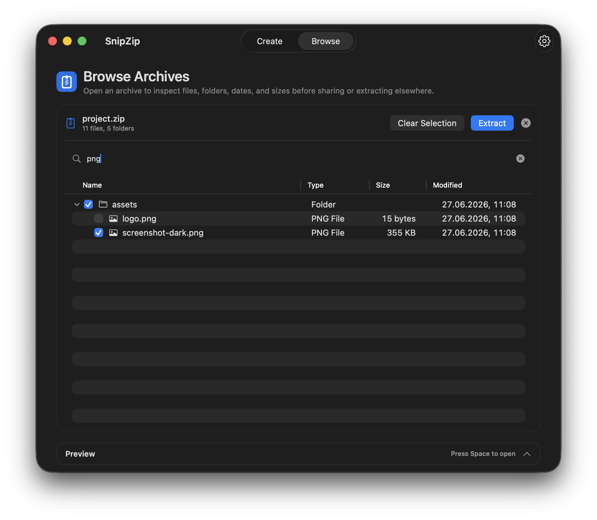
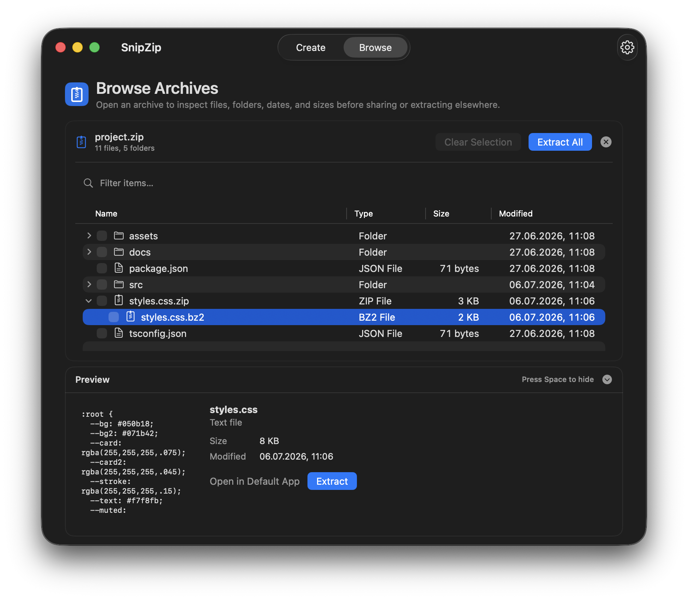
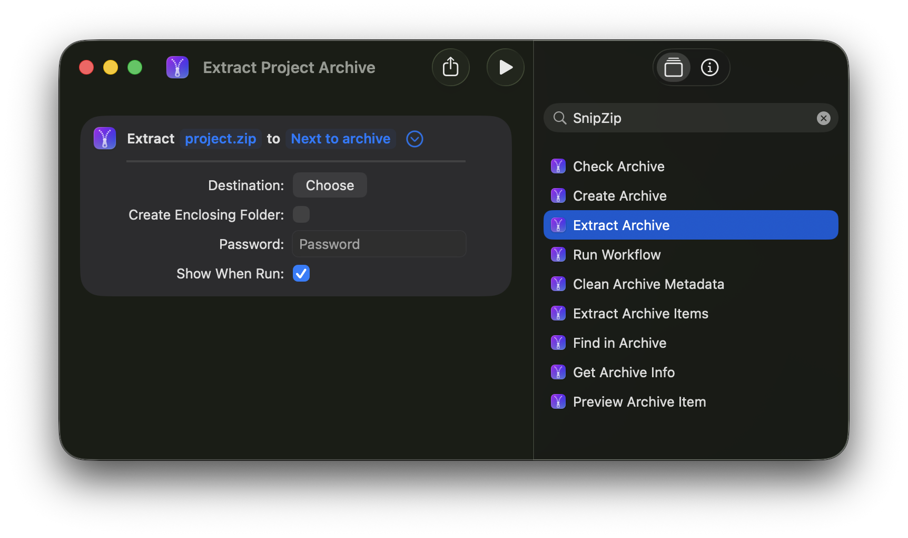

Native macOS archive utility
Archives, without the hassle.
Create ZIPs and other archive formats, inspect what’s inside, and extract only what you need.
Available now on the Mac App Store. Start free and upgrade once to unlock SnipZip Pro.


Search and selective extraction
Find it. Extract it. Leave the rest.
Search filenames and paths, then extract only the files or folders you need without unpacking everything first.
Archive preview Pro
See files before you extract them.
Preview images, PDFs and text files directly inside an archive before deciding what to save.
- Inspect file contents in place
- Open a selected file in its default app
- Extract only when you are ready


Nested archives Pro
Open archives inside archives.
Browse through nested archives in place, without extracting each layer to your Mac first.
- Inspect nested files before extracting
- Keep your workspace free of temporary folders
- Extract only the files you need
Format support
More than ZIP.
Open, browse and extract the archive formats you actually run into. Create ZIPs for free.
Open and extract 20+ archive formats.*
* Includes ZIP, 7Z, RAR, TAR, ISO, CAB, and more. Create additional archive formats with SnipZip Pro.
Apple Shortcuts
Put archive work on autopilot.
Use SnipZip actions in Apple Shortcuts to create archives, inspect their contents, and extract exactly the files you need.
Available in Apple Shortcuts on macOS 26 and later. Pro adds previews, advanced format creation and saved workflows.


Workflow Builder Pro
Build archive workflows that run your way.
Chain archive actions into a repeatable workflow, then export the final result with the format and options you choose.
SnipZip Pro
One-time purchase. No subscription.
Upgrade once in SnipZip to unlock advanced archive features.
Free
- Create ZIP archives
- Browse, search and extract archives
- Open encrypted archives
- Password-protected extraction
- Finder integration
- Apple Shortcuts: create, inspect and extract
Pro
- Everything in Free
- Create 7Z, TAR, ISO and more
- Create password-protected archives
- Split archives
- Preview files in archives
- Browse nested archives
- Workflow Builder
- Apple Shortcuts: previews and workflows
- Command-line tools
Private by design
Your files stay on your Mac.
Your files are processed locally in the macOS sandbox. No account. No uploads required. No in-app analytics or telemetry.
Ready to try SnipZip?
Download SnipZip free from the Mac App Store.